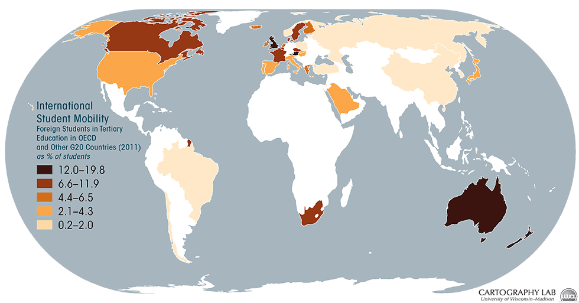
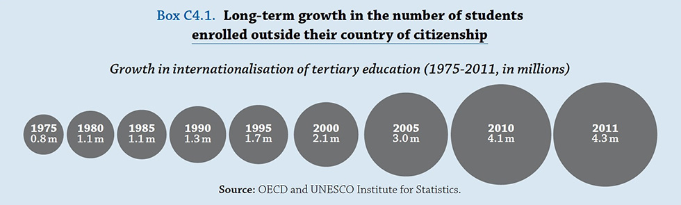
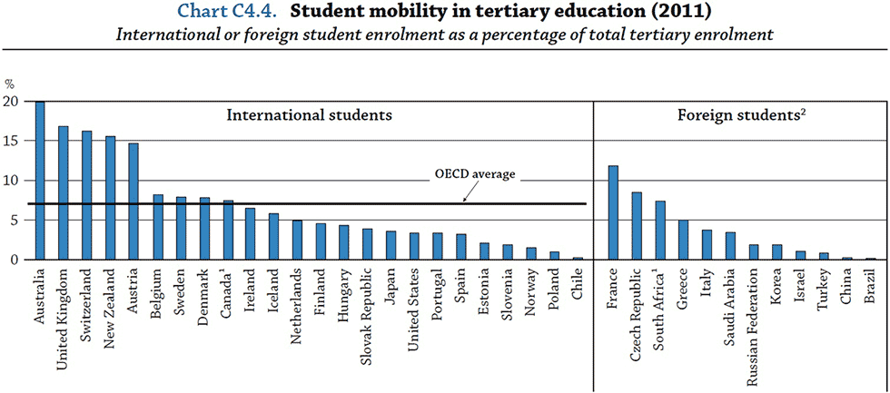

Unit 3: The Nation State as Globalizer of Higher Education

Universities have long encouraged international cooperation and the freer flow of faculty,
staff (to a lesser degree), students and ideas between countries.
Both of us benefitted hugely from this, doing PhD studies in countries that were different from the ones where we grew up. Susan left the white heat of a December summer in Perth, Australia, in late 1987 for what felt like arctic conditions in Alberta, Canada, while Kris swapped the fabulous West Coast and Vancouver for studies in the historic city of Bristol, England, in the 1990s. By some odd coincidence, Susan is now in Bristol, and Kris is now in Madison in the US—but that is another story.
The story we do want you to reflect upon this week is what has happened in the sector since our early moves, not just in terms of the kinds of jobs we do now, or indeed who and where we teach, but also concerning how our institutions have changed. We want you to ponder this question: what is the role of the nation state, and other actors at the national scale, in shaping the future of higher education as global processes unfold?
Thinking back, one fairly common response to this question in the 1990s was to declare the ‘nation state’ dead, the casualty of an unstoppable juggernaut called ‘globalization’. The well-known German sociologist, Ulrich Beck, colorfully called the idea of the ‘nation-state’ a ‘zombie’ category which should be erased from the social scientist’s toolkit. Such emotive descriptions—nation state as reanimated corpse!—are in hindsight amusing, not least because it is evident to us that the nation state was not just alive and breathing, but very active in attempting to fashion its future, including higher ed futures. But it is fair to say that at the time this extreme diagnosis of the fate of the nation state stimulated lively debates around the myth, or not (as some still saw it), of the withering away of the state in the face of an unstoppable global force (see Linda Weiss’s great work on The Myth of the Powerless State published in 1998).
From the vantage point of NOW, it is even clearer that the nation-state is not dead, though it is a very different nation state that now navigates, negotiates and brokers the global and regional economy. And nor is higher education, a sector once primarily harnessed to elite formation and nation building, dead either. But, it is a very different sector from the one we did our undergraduate and doctoral studies in.
This week we’ll be showing how the national state is playing a key role in reshaping the dominant logics, strategies, and outcomes of the higher education sector. In doing so, it is reorganizing the higher education sector as part of a ‘services economy.’
A health warning before we go too far! Not all countries are pursuing the same strategies with the same level of intensity, or achieving the same outcomes. But as Simon Marginson of London's Institute of Education argues in his writings and in the podcast here, almost no nation around the world is able to stand outside these processes without suffering some consequences.
In the rest of this text we’ll be outlining what we see as the key dynamics at work in this process, and will be asking you to also think about the consequences for the role of the university in modern societies today. We’ll also be hinting that it may be useful to invert dominant conceptualizations of ‘globalization,’ from an ‘out there’ phenomenon to an ‘in here’ phenomenon. As Saskia Sassen demonstrates in her thought provoking book Territory, Authority, Rights: From Medieval to Global Assemblages (2008), globalization is in fact constructed from within the nation state. The globalization of higher education and research is actually an ‘in here’ phenomenon for it is our ministries, departments, funding councils, and so on that are establishing new initiatives, regulations, concepts, brands, models, etc., that opens up the national to new forces, and which in turn transforms the national. Saskia Sassen has called this process of transformation denationalization – meaning that within the national there are dynamics at work that orient the national toward more global processes.
From building a nation to building a new economy
Perhaps the biggest change over the past 30 years is the sheer size of the higher education sector, as seen in global enrollment figures. In 2000, around 99.4 million students around the globe were enrolled in higher education. By 2030, some 414.2 million students are forecast to be enrolled. These huge increases in access to higher education are justified by government policies which call for greater investment in advanced knowledge and skills in order to create competitive knowledge-based economies. Mobilizing the brainpower of a nation, these policies proclaim, is critical to the economic health of a nation, because it is creativity that will drive new knowledge creation, leading to innovation, patents, other forms of intellectual property, and new firms.
But the big question is: Why the big concern for knowledge creation and innovation, and the development of knowledge-based economies, as a basis for economic competitiveness?
One answer we could give, very popular amongst policymakers in government as well as in organisations such as the OECD and the World Bank, draws from work of Peter Drucker (1969) and Daniel Bell (1973) to argue that all industrial societies are in transition to becoming knowledge economies (or post-industrial societies in Bell’s words). There were several core propositions to Bell’s arguments:
- All societies evolve, moving from pre-industrial to industrial to post-industrial
- In this evolutionary cycle, work moves from being muscle-based to mind-based
- Post-industrial societies are more dependent upon ‘theoretical’ knowledge, or the knowledge of professionals such as scientists, engineers, teachers, and health workers
- Post-industrial societies generate more wealth than industrial societies.
Our concern with this kind of explanation is that it is a variety of technological determinism. In other words, technologies are assumed to determine the shape of societies and their values. Of course there are elements of truth in this claim: it is very clear there is a relationship between the two. But it is also evident that other factors, such as the imagination and materialization of ways to organize our societies and our economies, affect the shapes societies take.
A somewhat different second answer, and one we feel best explains the kind of phenomena we are looking at here, is that we actively shape, and produce, our economic and social relationships, though always in relation to sets of constraints. Viewed through this kind of lens, the question for you to now consider is: what is the problem facing governments to which the creation of a larger and more vibrant services economy is the answer?
Here we would point to a number of factors, including the deindustrialization of manufacturing from the developed economies (e.g. Germany, USA, UK, Australia); the subsequent rapid growth of the Asian Tigers during the late 1960s-early 1970s and rise of Japan; the oil shocks in the early 1970s; the global economic crisis that followed in 1972; and the pressure on the West to search for a new basis for long run capital accumulation centered around new forms of knowledge creation and innovation, on the one hand, and the export of services, on the other. An economy driven by advanced knowledge creation and innovation will be dependent upon a well-educated population with tertiary level studies; here, we can see that the move from a small élite to a mass higher education system is one outcome of such policies.
The reconstruction of a national economy now dependent upon global services is also not straightforward, for the services sectors (such as education and health) of many countries are protected by national rules around foreign direct investment, by immigration policies, and by the strongly held view that services that are ‘public goods’ are not open to trade, whether local or global in scale.
Despite these strongly held views, interests in the sector exist, such as the Coalition of Service Industries (CSI), formed in 1982 to lobby for the reduction of barriers to US services exports. This group, among others, also used their lobbying capacity to shape the global trade negotiations taking place under the General Agreement on Tariffs and Trade (GATT) during the 1980s and early 1990s. The end result was that a new agreement was negotiated, called the General Agreement on Trade in Services – or GATS, which now also include (public) services such as education. This agreement was launched as part of the revamped World Trade Organization in 1995.
Four ‘modes’ are included in the negotiations on education as a tradeable services sector: cross-border supply – meaning providing services such as testing or distance education across national borders; consumption abroad – such as enabling students to study abroad; commercial presence - enabling a foreign investor to establish a commercial presence (such as a foreign university); and presence of natural persons – such as the ability to move labor such as academics between countries. The following video demonstrates the differences between these four modes.
Click the 4 modes above. (Animation requires Flash Player)
Examples of the four Modes of Supply (from the perspective of an "importing" country A)
Source: World Trade Organization: GATS Training Module
All of these modes weaken the state’s ability to manage the flow of people, money, services and so on across national boundaries. Keep in mind, however, that this weakness is sought by some countries, especially smaller and/or trade dependent countries, or countries with limited higher education and research capacity (e.g., global higher ed ‘hotspots’ like Singapore or Qatar).
But there have been, and continue to be, major difficulties facing national negotiating teams in seeking to advance the opening up of education to global trading rules. And in fact the controversial elements of this policy continue, largely because now that it is entrenched in global trade rules, policy reversals are difficult as those investing in the sector are able to lay claim to future lost income. Such policies also reinforce the view that education (including higher education) is a tradeable good, to be negotiated by Trade Ministries and not Education Ministries. Another relevant (if clunky!) term to describe these types of processes is desectoralization. We’re interested in what you think of this, and what you think this means for the autonomy of the higher education sector in shaping its own future. This is a question you can pursue in more detail in this week’s assigned exercise.
Making a global export industry
A second sea-change, along with the global expansion of students, has been the huge increase in the number of students studying for either undergraduate or graduate degrees in a country in which they are not a citizen. The OECD, in its annual Education at a Glance , shows that in the 1990s, around 1.3 million students were enrolled outside of their country of citizenship. Fast forward to 2011 and the figure is now three times that number, with around 4.3 million students now studying abroad. And according to some pundits, this figure is set to reach the 5 million mark in the next couple of years.
Figure 1: Long Term Growth in the Numbers of Students Enrolled Outside of their Country of Origin
Source: OECD (2013) Education at a Glance 2013 , Paris: OECD, p. 306.
By anyone’s reckoning, this is a very large population on the move. Yet more remarkable, by 2008 24.4% of this population of international students came from just three countries: China, India and Korea, with the largest population by far being China (14.9%). We’ll come back to a more detailed analysis of flows shortly, but for now it is worth pondering the drivers that have been influential in shaping these flows. These include:
- National marketing and recruitment strategies to bolster export earnings (such as in Australia)
- The demand for a knowledge driven economy and skilled human resources where national institutional capacity is limited (such as Singapore, as you will see in Week 7)
- The demand for English as a passport to becoming a global worker
- An emerging middle class in Asia who have the resources to pay for higher education (such as China, Malaysia)
- An overseas education being perceived as a means of social mobility, particularly when opportunities in the country of citizenship are limited (such as Hong Kong)
- The use of an overseas higher education as a stepping stone into the labor market of the country of study (such as Australia, Canada, USA, UK)
- Institutional marketing and recruitment of full-fee-paying students to augment declining state funding (such as in the UK, Australia, New Zealand)
- Superior research and development experiences for students in comparison to their home country, which feeds into R&D (such as in the USA, Germany, Switzerland)
- Changing demographics of a country—such a declining birth rate—and thus the need to ‘boost’ human resource capacity (such as in Korea)
- Regional mobility initiatives, such as Erasmus Mundus, the South East Asian Higher Education Area, Mercosur, ALBA, UNILA, to build new higher education areas (see Week 4)
It is because of the combination of complex dynamics at play that we see such momentum behind the increased flows of students moving from one part of the world to the other. Notice, in particular, the presence of newer players in the sector – like China and Singapore – not as major sending countries, but increasingly as destinations.
Where do all the students go…?
So what do the big patterns look like? Where do all the students go?
Looking at the OECD’s now landmark Education at a Glance series (the most recent of which reports 2011 figures), we can see that the United States attracted THE MOST foreign students (16.5%), followed by the United Kingdom (13.0%), Germany (6.3%), France (6.2%) and Australia (at 6.1%).
Figure 2: Distribution of foreign students in tertiary education, by country of destination (2011)
Source: OECD (2013) Education at a Glance 2013 , Paris: OECD, p. 307.
Total these figures up and we can also say that these five countries host around half of ALL higher education students studying abroad. Some of this pattern is determined by proximity, old colonial ties, and language. For instance, France is a favored destination for students from countries such as Tunisia, Algeria, Morocco, Haiti, and Coté d’Ivoire. Germany is favored by students somewhat closer to home, from Austria, Luxembourg, Poland and the Czech Republic. Australia recruits large numbers of students from across the Asian region, including Indonesia, Malaysia, Singapore and China (check out this UNESCO file [Excel spreadsheet] for fascinating details on outbound mobility).
Though the US continues to have the largest share of international students, this has in fact decreased over time as newer players have entered. Whereas the US accounted for 40 percent of all international students in the early 1990s, by the late 1990s this proportion had shrunk to 32 percent. The attraction of the United States, of course, is not only its prestigious universities. It has been a preferred destination for graduate students because of its world class research facilities and its generous scholarship programs, particularly in the sciences, mathematics and engineering. The top sending countries to the US currently are China, India, South Korea and Saudi Arabia, whilst the favored US states are California, New York and Texas (see these informative IIE fact sheets for more information).
International conferences sponsored by organizations like European Association for International Education (EAIE) and NAFSA: Association of International Educators (NAFSA) are some of the most fascinating places to see the emerging global trade in students laid bare. The exhibition floors are huge, and heavily populated by officials representing national governments, select universities, relevant national associations, and a fast growing private sector industry seeking to profit off the trading process. Off site receptions, sponsored by national (and some state/provincial) governments are held too, to further the formation of needed contacts and networks. For those of you who have never been to one, here are a few of our photographs taken in these 21st century trading bazaars.
In contrast with the US, which has around 4% of international students in its overall student body, Australia has built up huge intakes into its undergraduate programs, with around 1 in 5 students being an international student. Of this number, 8 in 10 come from the Asian region. The financial crisis in 1997, or more recently the strength of the Australian dollar making it an expensive place to study, has resulted in a drop in numbers flowing into Australia. This has created major headaches for universities, including the need to manage a reduction in staffing.
The figures reported are national averages, so you also need to think about the uneven distribution of students across cities, institutions and departments, especially in countries with high proportions of international students (see Figure 3 below). In the UK, for instance, the international student body is around 16% of the overall student numbers in higher education, but these numbers are higher in graduate programs, such as science and engineering and management and commerce.
Figure 3: Student Mobility in Tertiary Education 2011 – International Student Enrolment as a % of Total Tertiary Enrolment.
Source: OECD (2013) Education at a Glance 2013 , Paris: OECD, p. 311.
Note that the OECD differentiates Foreign students vs International students in that in some countries “Foreign students are defined on the basis of their country of citizenship” so “these data are not comparable with data on international students” and are “therefore presented separately in the chart.” What this means is the OECD rightly does not consider landed immigrants (e.g., a long-term visa holder without full citizenship rights) to be the same as a temporary international student completing a degree in 3-4 years.
Concentrations of international students in some of the science departments in the UK, where more than 50% of the students might be international students, have led the Higher Education Funding Council to become particularly concerned about what they call vulnerable and strategic subjects. This became particularly evident when new immigration rules were put into place by the UK Border Agency making it more difficult for international students to access visas. A department with a heavy dependence on international students can quickly face the threat of closure if the flow of students is interrupted. Equally important is the chance of staying on after studying, which new rules make more difficult. Here you can see the challenges facing policy-makers: promoting city regional development through attracting skilled labor is made more complicated when a significant component of that graduate skilled labor is international students unable to make their knowledge and skills available to the region.
Note again the growing importance of Asia, not just as a region that sends a large number of students abroad, but as a destination—and here we can point to the growing importance of Hong Kong, Taiwan, Malaysia, Singapore (which we will cover in some detail in Week 7), South Korea and China. South Korea is attempting to manage the consequences of a falling birthrate by encouraging inward flows of international students. Hong Kong too, with its Education Hub/Services strategy, is aiming to take advantage of its location between the East and the West and attract fee-paying students to its higher education institutions. In 2006 Taiwan launched its higher education Excellence initiative, hoping to attract 130,000 international students by 2020. What’s the main reason for this? It wants to break into the world’s top 50 universities, and to do that it needs a healthy international student population as that is one of the criteria built into the global rankings.
And where is China in this? Martin Jacques’ cheekily titled his highly readable book on China When China Rules the World , but his is a serious analysis of the rise of China as a global power. We’ll be asking you to look closely at its Medium and Long term Reforms and Development 2010-2020 policy and consider the ambition behind it. For now, we think it worthwhile to highlight a few facts for you to think about.
First, by 2020, China plans to host 300,000 international students in China. Second, as we speak, the numbers of international students already studying in China have risen to a record 265,090 in 2010, up from 52,150 in 2000. Chances are that China will have easily reached and passed its target of 300,000 by 2020. And, whilst the international students flowing into China tend to be Asian (161,605), North America sends around 25,557 students.
Look again at the sending countries and we can see that it is the US that is the second largest sending country (7.8%) after South Korea (27%). These changes in direction of flow are fascinating, as they reflect changes in the centers of economic power, and anticipation of the growing importance of Mandarin for jobs in the future.
Figure 4: Total International Students in China 1999-2010.
Source: The International Mobility of Students in Asia and the Pacific , Bangkok: UNESCO, pp. 20.
Figure 5: Top 20 countries of inbound students to China.
Source: The International Mobility of Students in Asia and the Pacific , Bangkok: UNESCO, pp. 21.
However as Professor Yang Rui, a China HE watcher, notes in our interview with him, many of the students from North America tend to be part of study abroad programs, and not enrolled in undergraduate programs. You might also be curious about why China has such an ambitious target for recruiting international students over the next 5 years. Is it their talent? Perhaps. But an equally compelling case that Yang puts is that China is pursuing its increase in numbers of international students as this is a means of rising up the global rankings tables more rapidly. That is, one criteria to be a ‘world class university’ is that it has a diverse population of international students (we discuss this in Week 6). And being world class means sending a strong message to the ‘West’ that China is once again is a powerful country following a century of humiliation.
Yang Rui is currently Professor of Education at the University of Hong Kong. Rui's substantive research area is on the Asia Pacific and higher education, with a particular interest in China. He is particularly insightful on the ways in which Chinese traditions and politics continue to mediate contemporary higher education developments in the region and globally. Listen to his thoughts on why China is investing heavily in universities in order to rank highly in the world class university rankings.
What then of the two regions of the world that we have not mentioned, Latin America and Africa, and what kinds of national movements of students do we see? Latin America contributes around 6% of the global share of students who are mobile, with three-quarters of these most students ending up in the US and 23% moving within the region. Cuba is a major destination for students from within the Latin American region, with some 30,000 students studying in Cuba, often in advanced areas like medicine, and in some cases funded through regional projects such as ALBA (which we look at in Week 4).
But it is Sub-Saharan Africa, a region of some 40 countries in total, which faces the greatest challenges in the provision of higher education and where student mobility is also a major issue. In relation to higher education rates in general, there have been major increases over the past four decades, with an annual growth rate of 8.4% compared to 4.3% for the world in general. However, despite this growth, Sub-Saharan Africa’s gross enrolment rate is just 6% (compare this with 72% for North America or 13% for South West Asia).
And what of the mobility patterns in Sub-Saharan Africa? The first point to note is that South Africa itself is a leading host country for international students (61,000 studied there in 2009), though two thirds of these students come from other Sub-Saharan African countries (SADC) – namely Botswana, Lesotho, Namibia, Swaziland and Zimbabwe. South Africa also is ranked tenth amongst host countries worldwide – and these figures have increased over the past decade. Yet it is interesting that only 1% of non-SADC Sub-Saharan African countries go to study in South Africa, and only 5% study elsewhere in Africa. In essence, they study in countries much further afield, such as Canada, France, Germany, the UK or the US.
Thus language and colonial ties are important; for instance Angolan students are more likely to study in Brazil and Portugal, whilst Congolese students head to France. However, this pattern is not always evident; South African students are more likely to study in the US rather than the UK, despite, or because of, its previous history. A second, and very serious, point is the question of brain drain: a significant number of students do not return. And while advocates of mobility tend to point to the importance of remittances, it has also been pointed out that the middle class is less likely to send money back, and it is this population that is likely to be the student population. A third issue is the level of enrollment—that is, as undergraduate rather than graduate—and the kinds of subjects the students study, which tend to be in the humanities and social sciences, and not engineering, technology or the health sciences. Given the importance of this kind of knowledge for the development of a knowledge-based economy, some analysts argue that this limits the development trajectory over the longer term.
We can’t conclude our account of student mobility patterns without pointing to some of the challenges international students face when they go to study abroad. There are always the difficulties of settling into a strange place, no matter how much this is a journey of discovery (see Week 1). For instance, some groups of international students have faced major threats to their personal security, leading to major stand-offs between countries as they manage the fall-out on both sides. For example, racist attacks in Australia on Indian students studying there were picked up by the Indian media and widely circulated.
And there are other effects as well. Whilst particular local and national economies have been economically invigorated, the color and character of parts of institutions and cities have also changed. Cities like Vancouver, Sydney, London, and Auckland, and more recently Singapore and Hong Kong, have seen their institutional profiles, built environments and cultural milieus transformed, and not without significant local resentment.
Calculating the economic value of education as a tradeable sector
So what’s in it for the nation and the national economy? Well, clearly institutions benefit – through fees/tuition, and so on. But nations also benefit as they count the benefit of huge populations of students who contribute to the local economy. By some calculations, the value generated by international students in higher education is truly eye-watering.
The first time we heard that education generates more ‘export earnings’ for the New Zealand economy than does the wine industry, we were both knocked off of our seats, and not because we had had too many glasses! After all, New Zealand’s white wine industry is world-famous. You’ll be even more surprised if you look at the figures for Australia put out by the Department for Foreign Affairs and Trade (DFAT) on Australia’s top 25 exports. You’ll notice that in 2012, ‘education related travel services’ ranked as one of its top exports in goods and services, fourth only behind major extractive industries, such as iron ore and concentrates, gas, and gold. Education is a seriously big earner, if we can believe the calculations.
Now to most casual observers—possibly including yourself—describing education as a key export in a nation’s ‘trade’ sounds decidedly odd. After all, higher education has been, and continues to be, widely viewed as a ‘public good’ rather than a tradeable services sector. Yet the policy significance of what this means to the economy of a country like Australia is captured in the following statement issued in an Australian Reserve Bank Bulletin in 2008:
Australia’s education services exports have continued to grow in importance this decade. Since 1982, education services exports have grown at an average annual rate of around 14 per cent in volume terms, with their share in the value of total exports increasing from less than 1 per cent to almost 6 per cent in 2007. …Indeed, education exports are now Australia’s largest export, behind only coal and iron ore.
You are now likely posing your own questions. When did Australia begin to include education in its trade figures? What do they mean by ‘education-related travel services’? And why is the Department for Foreign Affairs and Trade posting these figures, rather than, say, a department or ministry for higher education? What difference might this make to policy in the higher education area? You’ll notice, too, in the table below where we highlight the top 5 exports, there has been a decline in growth of the education services sector between 2010 and 2012. What is the likely cause of this? And more importantly, what are the consequences for universities and academics?
Click image to visit website with the complete list
Figure 6: Australia’s top 25 exports, goods and services, DFAT, 2012
Since being bowled over by the value of education exports to economies like New Zealand and Australia, we have scanned the various strategy documents that are regularly released to look more closely at how education services are counted and calculated in different parts of the world.
The UK Government, in its 2013 report International Education: Global Growth and Prosperity , draws upon a methodology that one of its government departments developed in 2011. One assumption in the UK calculations is that students bring in significant revenues to the university via their fees. A second is that students also contribute to the local economy through living costs. Using this methodology, it estimated that UK education exports were worth £14.1 billion in 2008/09. Using a similar methodology it offered an updated set of figures for 2011 with an estimated value of £17.5 billion. As you can see from the report, this figure is for all levels of education but higher education is a very large component. However, the report identifies non-monetary benefits as well, noting that “international students in the UK bring diversity to the education sector, helping to provide an international dimension that benefits all students” (p. 23).

Click image to view PDF version
Figure 7: UK Higher Education as an Export Industry, Universities UK, 2011
Source: Universities UK | Higher Education in Focus: Driving Economic Growth
Click image to view PDF version
Figure 8: International Education Infographic
Source: www.gov.uk
It's noteworthy that Universities UK's export earnings numbers, published in April 2014, are a little different (and lower). As they note in The Impact of Universities on the UK Economy :
The higher education sector as a whole (universities plus the off-campus spending of non-UK students and visitors) generated an estimated £10.71 billion of export earnings for the UK. This figure includes: fee payments from non-EU students (£3.24 billion); fee payments from students from the rest of the EU (£0.39 billion); research income from international sources (£0.92 billion); residence and catering income (£0.74 billion); other income, eg including consultancy from international sources (£0.37 billion); together with the off-campus expenditure of all non-UK students (£4.91 billion) and non-UK visitors (£0.14 billion).
Similarly, NAFSA, the US-based Association of International Educators, noted that international students and their dependents contributed approximately $24 billion to the U.S. economy during the 2012-2013 academic year. Indeed, NAFSA has created an excellent resource, The International Student Economic Value Tool, that you might consider playing around with to explore the calculations and impacts yourself.
It is increasingly common to hear about such numbers, and more often than not even experts within the higher education sphere are surprised by the significance of the impact of providing international students with an education. Given this, we would like to flag three key issues to think about when faced with these admittedly staggering numbers.
Figure 9: Comparison of International Education Services with Other Top Exports in Goods from Canada to the Top Ten International Student Source Countries, 2008.
Source: Foreign Affairs and International Trade Canada, 2009.
Source report: http://www.international.gc.ca/education/assets/pdfs/RKA_IntEd_Report_eng.pdf
First, it is important to think about why these numbers are being sought at this point in history. We would argue that these numbers are being constituted, and debated about, in the context of an ideological transition, one that increasingly enables views to emerge of higher education as a driver of economic, rather than cultural-political, change. For example, a decade or two ago, it would have been impossible to imagine creating tables such as the one profiled in Kate Geddie’s entry in GlobalHigherEd in which education is measured against ‘scrap plastics’ or ‘chemical woodpulp’.

Second, there is a striking variation in the nature and quality of the analytical models adopted by ministries, and their consultants, in accounting for the economic impact of education exports. Despite emerging capacity to assess such impacts, and of the role of more powerful ministries in this analytical exercise, the numbers are not yet comparable. For instance, the Australian Department for Trade and Industry’s calculations of the net worth of the higher education sector includes estimations of the value of visiting family and friends, whilst the UK model does not. This obviously makes comparisons very problematic, as the underlying assumptions are different. Should all levels and forms of education be accounted for in trade figures – such as schooling and vocational education? Or, to what degree is national support (e.g., research assistantships, fellowships, associate instructors) for foreign students accounted for in the analytical models on offer?
Third, it is also worth thinking about the emerging capabilities to generate such analyses. Interestingly, almost all of the analyses have been generated by consultants working on behalf of ministries of education, or ministries of foreign affairs and trade – such as the work done by Münch and Hoch for DAAD – the German Academic Exchange Service – in November 2013. In essence Calculating the Financial Impact of Cross Border Student Mobility on the Economy of the Host Country has itself generated a small niche industry of experts and consultants who are now deeply caught up in imagining and making this new higher education services economy.
But they are not the only producers of estimating of value. For instance, analysts at the Bank of America Merrill Lynch in a report released in November 2013, valued the global education sector as worth something in the order of $4.5-$5.1 trillion (though this figure includes primary and secondary schools, e-learning, childcare, language learning and testing). Tipped to benefit from entering into the education services sector are big players that include Pearson, Informa and Reed Elsevier, huge transnational firms who have major investments already in the education sector. There’s a lot to play for, it seems, but also a lot at stake when the sector begins to be dominated by major players whose logics are at odds with the logic that has classically shaped the raison d’être of the modern university as we have known it over the past century or so.
Branding: Place, Pride…and $$$s
Box 6 – Branding New Zealand education
What’s the first thing you say when asked by a student about what studying in New Zealand is like? What are the experiences of New Zealand education you wish others could immediately see and understand?
To help share the story of what makes New Zealand unique, Education New Zealand has developed the New Zealand Education Brand Story.
Launched tonight at the New Zealand International Education Conference 2013 in Christchurch by the Minister for Tertiary Education, Skills and Employment, Steven Joyce, the New Zealand Education Brand Story is a suite of resources you can use to share the distinctive benefits of New Zealand education in an emotionally engaging and inspiring way.
The central messages – all focused around the concept of ‘new’ and being open to the new – are articulated in a captivating two-minute video and associated marketing resources including photographs, logos, branded templates and presentations that you can use when marketing your institution, business, region or the country as a whole.
The idea behind developing these marketing resources is that by first building awareness of New Zealand education internationally – who we are, what we stand for and what we offer as a country – it will pave the way for you to introduce your school, university, business or institution and its distinctive strengths in more detail.
You can access these resources through a new marketing toolkit – The Brand Lab.
Now if calculations over the value of the sector have gotten you thinking, then the fine-grained calculations that institutions and national higher education sectors are making over how best to position this national export are also worth scrutinizing closely. In many ways the branding of higher education sectors has all of the hallmarks of the pride we see in having a national airline! There are the iconic elements that tell us we are in a Thai as opposed to a Korean or Arab airline—colors, images on the body of the aircraft, the uniforms of the staff, and so on.
Branding the higher education sector has also become an important dimension of trading education as a services sector. Take a look at the New Zealand government’s efforts (see Box 6) to ensure that the New Zealand Education Brand story is one that is widely shared by all of the institutions that make up the sector through the ways in which they manage the sector’s representation of itself.
NUFFIC—the Dutch government’s arm that promotes Study In Holland—trumpets the qualities of the Dutch people and their history (unique, creative, pioneering, connected) and introduces international students who have studied there in the past who give testimonials about their experiences.
Similarly StudyMalaysia, the advertising arm for the Malaysian government, brands the country as offering “the best of the East and the West”, whilst “…international students will also have the chance to learn about the rich and diverse culture in Malaysia. The multicultural society of Malaysia of religions living harmoniously is a fine example of a country that promote peace and prosperity. The people of Malaysia are warm, friendly and accommodating – international students will find that they fit in to the lifestyle here easily.” Place and people do, indeed, have a $$$ value which is being valorized and put to work for the sector.
There are a lot more quite fascinating examples than we present here, and you now doubt have your own. But the greater purpose is not so much to provide a long list, but to provoke you to think about how strategically ‘nation’ and ‘branding’ are at work in the remaking of this sector.
Final Thoughts
In closing, we hope we have offered you some insights and food for thought regarding how the nation state and other national scale actors are deeply engaged in globalizing (or denationalizing) the sector, which is also undeniably creating a diverse array of economic, social, cultural impacts. And whilst we have concentrated attention on the economic interests at work, it is very important to emphasize that mobility patterns are also shaped by politics and geo-strategic alignments, and that these also change over time.
You might now also be asking: what of the other values we have traditionally associated with higher education, such as learning, new knowledge creation, wisdom, and tolerance? What happens to these values as denationalizing processes proceed, and how might we ensure that they remain a central part of what it means to acquire a higher education? Does it matter? And if so, to whom? What other criteria might we use to create a debate about the changing shape of higher education and the role of the national in this process? It’s over to you now.
Susan and Kris
Week 3 Activity
The Nation State as Globalizer of Higher Education
Choose from one or more of the following options:
Option A: Students = wood pulp or iron ore?
As the higher education sector has become increasingly drawn into the international trade departments of governments (a process we referred to as ‘desectoralization’), and is viewed as an important contributor to the development of an export services economy, it is also being compared to other tradeable goods and services – ranging from wood-pulp in Canada (see Figure 9 above) to iron ore in Australia. We also see new terms emerging such as term “international fee population” (see page 6 in the University of Exeter’s International Report , published in 2013).
What does this way of thinking about higher education – as having an economic value in terms of contribution to GDP - mean for how we value higher education? Or does it not matter? Mount an argument either for or against this practice. Feel free to include illuminating examples from the systems and institutions you know best, admire, or detest.
Go here to post your Option A contributionOption B: What is an effective and truly strategic internationalization strategy at the national level?
The patterns evident in the first visualization above are the outcomes of student demand, but also government strategy. It is the state, after all, the enables and constrains the mobility of students, staff, and faculty across borders. Now, while there has always been mobility across borders, an increasing number of national governments around the world are developing and publicizing policies and strategies with regard to the internationalization of their higher education sectors. See, for example, two recent national policy/strategy documents – one from Canada and the other from the UK. Interestingly, Canada’s newly released strategy touched off a big debate:
- http://higheredstrategy.com/canadas-long-awaited-new-internationalization-strategy/
- http://higheredstrategy.com/canadas-international-education-strategy-how-did-it-get-so-bad/
- http://higheredstrategy.com/international-education-strategies-how-others-do-it/
- http://www.universityaffairs.ca/speculative-diction/brand-canada/
that’s worth quickly looking at.
What country ‘has their act together’ (i.e. they do a good job) with respect to formal internationalization of higher education strategy? Outline what they’re doing well, and why they seem to be doing it well.
Conversely, what country ‘has their head in the sand’ (i.e. they’re doing a bad job) with respect to their internationalization of higher education strategy? Outline what they’re doing badly, and why they seem to be doing it badly.
In the end, is there a model strategy out there in the countries you know best? What are the content and process dimensions of an effective and truly strategic national internationalization strategy for the higher education sector?
Go here to post your Option B contribution
Option C: The tipping point (i.e. can you have too many foreign students in a university)?
One of the outcomes of national strategies to increase the number of fee paying foreign students is the transformation of the material landscapes (e.g., new buildings, labs, student residences, student unions, shopping facilities, restaurants) of
university and college campuses, as well as teaching and learning dynamics. Is there a tipping point when the disadvantages of large proportions of foreign students outweigh the benefits, and what do you see these as being?
What might you factor in were you to set a maximum threshold for a higher education institution (i.e. a point not to be passed),
why, and
who should be involved in making this type of decision?
Go here to post your Option C contribution
How to submit your contribution:
- Submit your response as a new thread in the corresponding discussion sub-forum (linked above)
- Deadline: 10:00 AM (CDT/Chicago-time) on Monday, 21 April. (Time Zone Converter)
- Please review the expectations provided in the Activities section of the syllabus.
- Read and debate with your fellow students. You are encouraged to discuss in both topic areas.
- Vote-up the posting(s) that you feel provide(s) the most insightful contributions.
- For those seeking a Statement of Accomplishment, please click the button below to attest your completion
- Tip: Copy the URL of your thread before submitting your activity completion record.
Sharing Policy Reminder:
By posting materials, you license that content under a Creative Commons Attribution 4.0 license (legal code). This license means that you irrevocably grant anyone permission to use, copy, modify, and sell the material without notifying you, as long as they credit you.